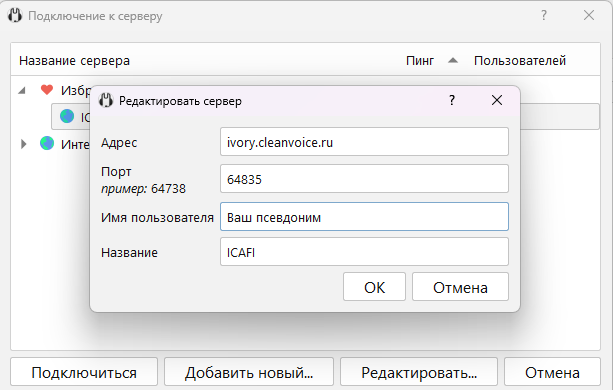

Привет соклановцы, информационный ресурс нашего клана ICAFI
поле адрес - ivory.cleanvoice.ru, порт - 64835, имя свое, название сервера любое. должно получиться так
на некоторых компьютерах есть проблемы с последней версией клиента, а именно при выходе из программы настройки не сохраняются и приходится постоянно настраивать их заново. в этом случае качаем стабильный клиент mumble, перед установкой нужно удалить предыдущий клиент и все заработает у кого при установке вылетает ошибка "система не обнаружила vcruntime140.dll" - качаем и устанавливаем вот эту библиотеку
Описание клана:
Играем взвода, турниры. Закрываем без проблем КБЗ, кзрослый коллектив, живая связь - пока через ВК звонки. Условия приема: